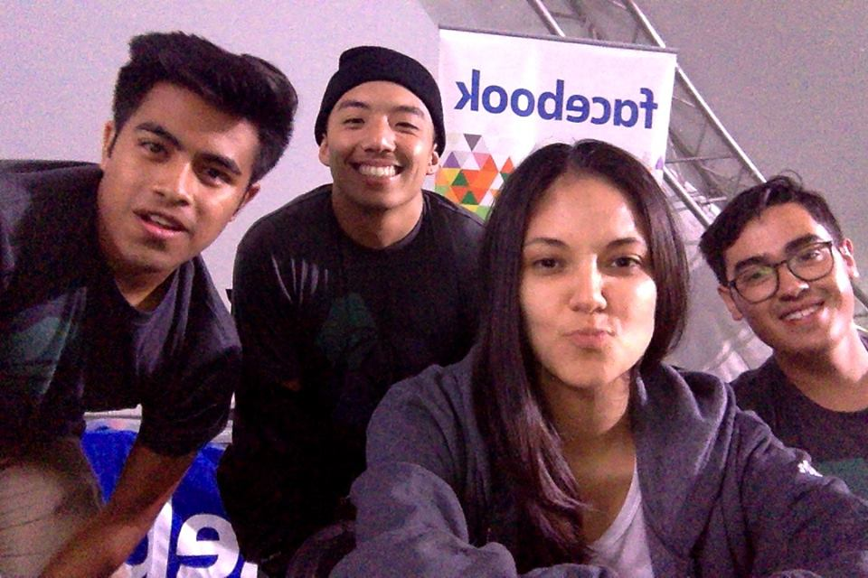
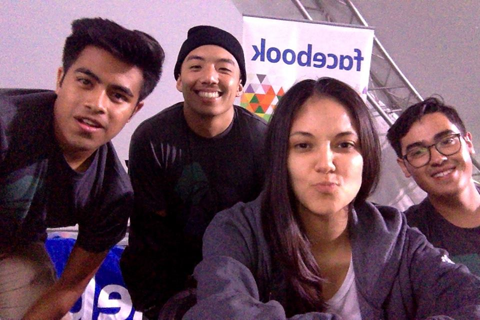

Dancify
 
Members: Eddie Tapia, Vince Chang, Atl Arrendondo, Natalia Alverez

Members: Eddie Tapia, Vince Chang, Atl Arrendondo, Natalia Alverez
- Dancify is a mobile app that connects you with other people who would like to attend a dance event. Users are matched based on their profile information which include availability, location, gender preference, and music genre.
- Check out the project on devpost: Dancify
Sudowoodo
- Sudowoodo is an Android app that notifies users when a plant from their list needs to be watered based on the daily weather report given by Yahoo! Users can also read descriptions on the four plant categories and add/remove plants from their list.